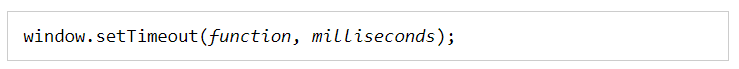
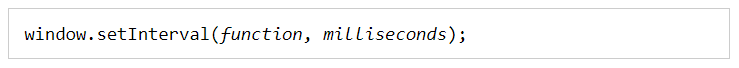

__________________________________________________________________________________________________________________________________________________
JavaScript can be executed in time-intervals.
This is called timing events.
__________________________________________________________________________________________________________________________________________________
Timing Events
The window object allows execution of code at specified time intervals.
These time intervals are called timing events.
The two key methods to use with JavaScript are:
- setTimeout(function, milliseconds)
Executes a function, after waiting a specified number of milliseconds.
- setInterval(function, milliseconds)
Same as setTimeout(), but repeats the execution of the function continuously.
The setTimeout() and setInterval() are both methods of the HTML DOM Window object.
__________________________________________________________________________________________________________________________________________________
The setTimeout() Method
Syntax:
The window.setTimeout() method can be written without the window prefix.
The first parameter is a function to be executed.
The second parameter indicates the number of milliseconds before execution.
Example: https://www.w3schools.com/js/tryit.asp?filename=tryjs_timing1
__________________________________________________________________________________________________________________________________________________
The setInterval() Method
The setInterval() method repeats a given function at every given time-interval.
Syntax:
The window.setInterval() method can be written without the window prefix.
The first parameter is the function to be executed.
The second parameter indicates the length of the time-interval between each execution.
This example executes a function called "myTimer" once every second (like a digital watch).
Example: https://www.w3schools.com/js/tryit.asp?filename=tryjs_setinterval2